TOURIST DESTINATION
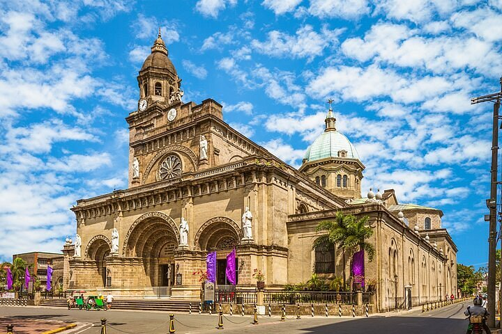 Location:Intramuros Description:Intramuros is Manila’s historic "Walled City". Built by the Spanish in 1571, it served as the political, military, and religious center during the colonial period. Located just north of Ermita in Manila, it is easily reached by taxi or the LRT-1 (Central Terminal) |
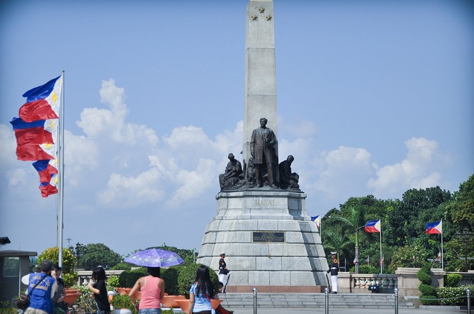 Location:Rizal park Description:Rizal Park, also known as Luneta Park, is a sprawling 58-hectare urban oasis in the heart of Manila. Located along Roxas Boulevard and overlooking Manila Bay, it is the country's most significant historical landmark and a popular recreational hub featuring landscaped gardens, plazas, and a vibrant evening dancing fountain |
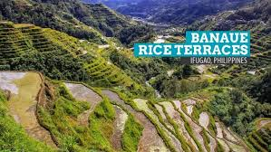 Location:Banaue Description:Banaue is a mountainous municipality in the Ifugao province of the Philippines, famed for its breathtaking, 2,000-year-old rice terraces. Hand-carved into the Cordillera mountain range at 1,500 meters above sea level, these ancient structures showcase extraordinary indigenous engineering and are celebrated as a UNESCO World Heritage Site |
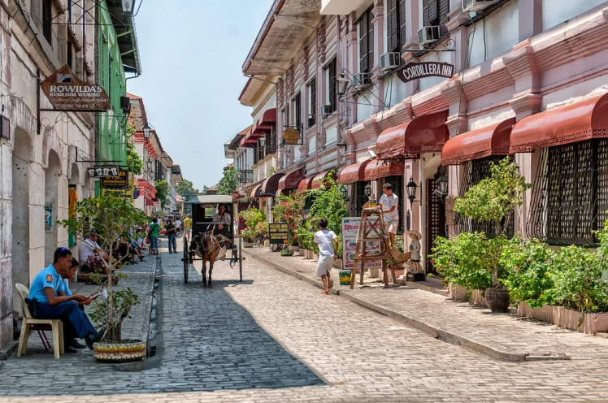 Location:Vigan Description:Vigan is the capital of Ilocos Sur, Philippines, renowned as the best-preserved example of a planned Spanish colonial town in Asia. A UNESCO World Heritage Site, it offers a blend of 16th-century Spanish architecture, traditional Chinese craftsmanship, and native Filipino culture |
 Location:La Union Description:La Union is a coastal province in the Philippines' Ilocos Region. Widely known as "Elyu" or the "Surfing Capital of the North", it features a dynamic blend of surfing culture, rich history, and laid-back beachside cafes, all situated about a 4-to-5-hour drive north of Manila |
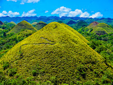 Location:Chocolate Hills Description:The Chocolate Hills are a geological marvel in Bohol, Philippines, consisting of 1,260 to 1,776 perfectly symmetrical, cone-shaped limestone mounds spread over 50 square kilometers. Covered in green grass, the hills turn a distinct cocoa-brown during the dry season, creating the landscape that gives the attraction its famous name |
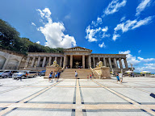 Location:Taoist Temple Description:The Visayas region is home to stunning temples, most notably the Cebu Taoist Temple in Cebu City. Built in 1972, this colorful, multi-tiered sanctuary sits 110 meters above sea level. Visitors can climb its 81 steps, admire classical Chinese architecture, and enjoy sweeping views of the city |
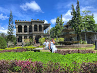 Location:Ruins Description: The Visayas features a rich tapestry of ruins ranging from opulent Spanish-colonial mansions destroyed during WWII to centuries-old indigenous and coral-stone fortifications. The region showcases various historic structures, each offering a unique window into the past |
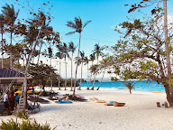 Location:Boracay Description:Boracay is a world-renowned tropical resort island in the Philippines, located about 300 km south of Manila off the northwest coast of Panay. Famous for its 4-kilometer stretch of powdery white sand known as White Beach, it offers crystal-clear waters, vibrant nightlife, and a wide array of water sports |
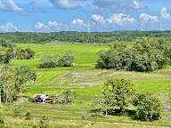 Location:Lorenzo Description: he description of "Lorenzo" in the Visayas primarily refers to San Lorenzo, a fifth-class coastal municipality located on the island province of Guimaras in Western Visayas |
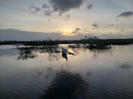 Location:Siargao Description: iargao is a teardrop-shaped island in the Philippine Sea, located 196 kilometers southeast of Tacloban. Spanning 437 square kilometers, it is renowned globally as the "Surfing Capital of the Philippines". Beyond its world-class waves, the island features dense coconut forests, white-sand beaches, and crystal-clear lagoons |
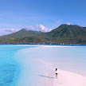 Location:Camiguin Description:Camiguin, a pear-shaped volcanic island in the Bohol Sea, lies 10 kilometers off the northern coast of Mindanao. Dubbed the "Island Born of Fire", it is famous for its seven volcanoes (including the active Mount Hibok-Hibok), pristine white sandbars, and unique sunken memorials |
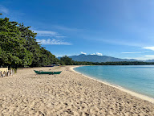 Location:Dahican Description: Dahican is a stunning 7-kilometer crescent-shaped stretch of powdery white sand and turquoise waters in Mati City, Davao Oriental. Famous for its massive Pacific waves, it is a premier destination for surfing and skimboarding, and serves as a vital nesting ground for endangered sea turtles |
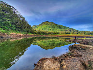 Location:Mt.Apo Description:Mount Apo is the highest peak in the Philippines, towering at 2,954 meters (9,692 ft) above sea level. Located on Mindanao island, it spans the borders of Davao City, Davao del Sur, and Cotabato. This massive stratovolcano features solfataric vents, sulfur deposits, and is a sacred cultural landmark for indigenous tribes |
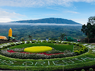 Location:Claveria Description:laveria is the name of three distinct Philippine municipalities named after former Spanish Governor-General Narciso Clavería. If you meant the mountainous, highland town in Misamis Oriental, it is a bustling agricultural hub renowned for its cool climate (often dropping below 22°C), panoramic view decks, and the towering "ostrich tree" |